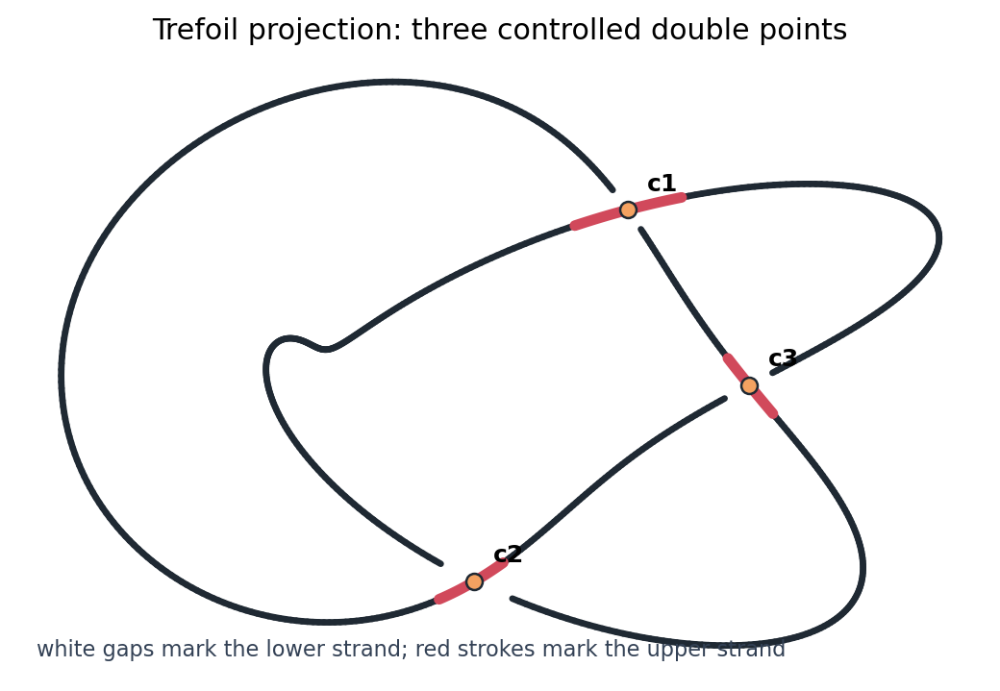
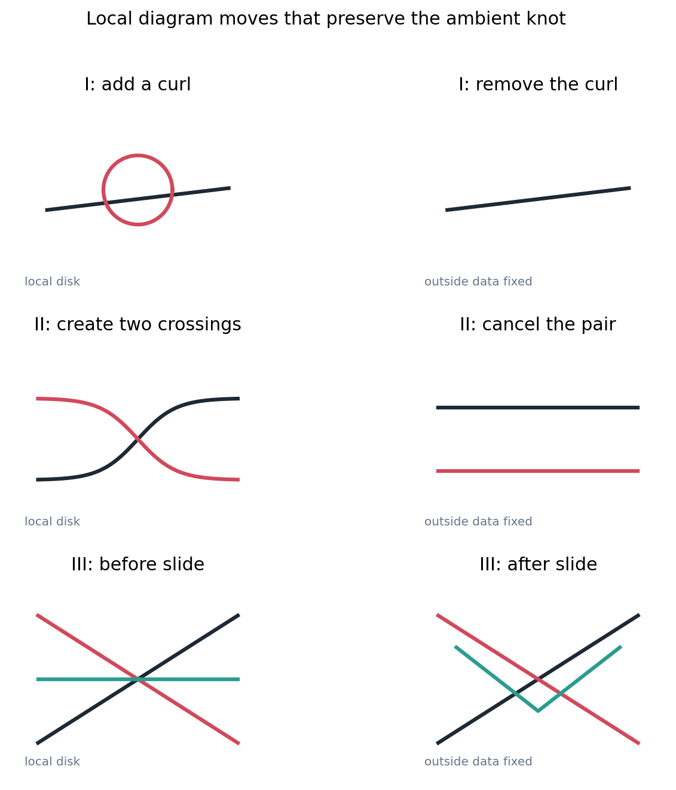
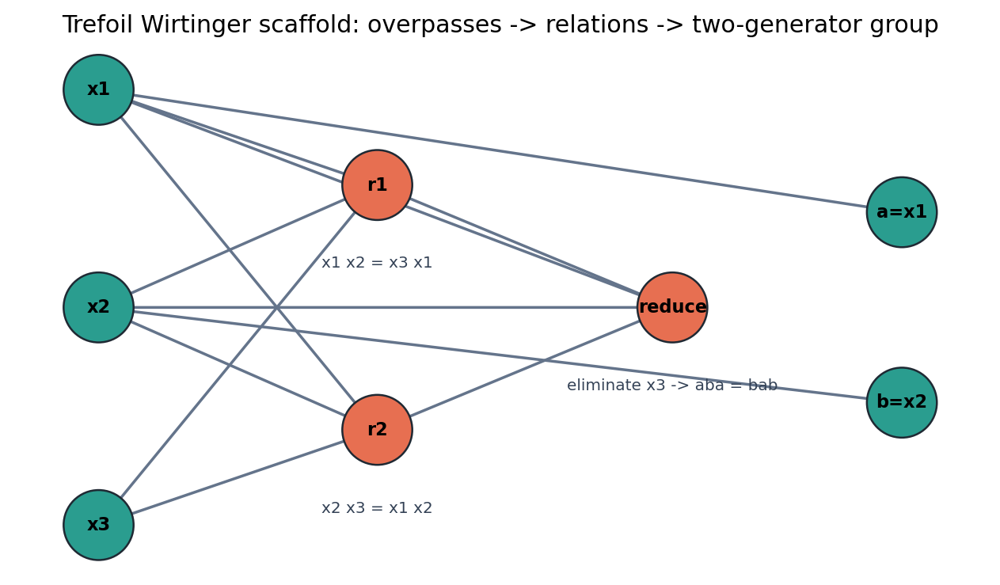
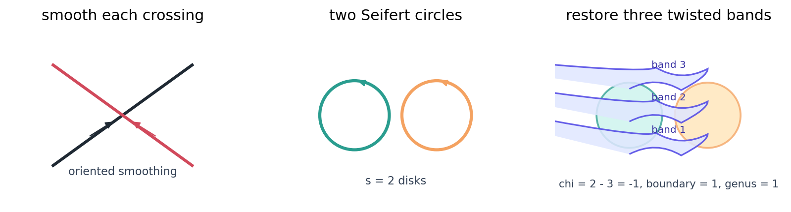
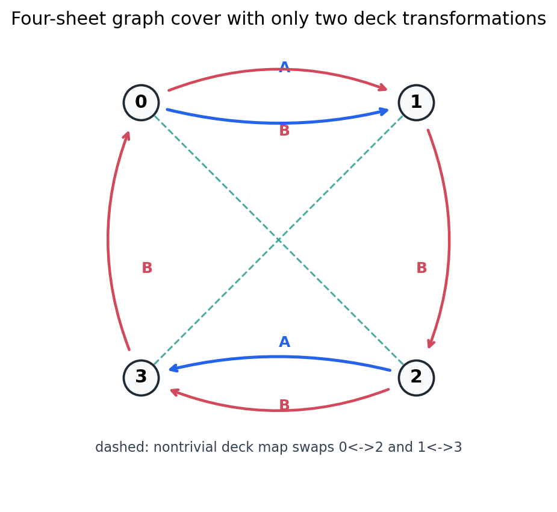
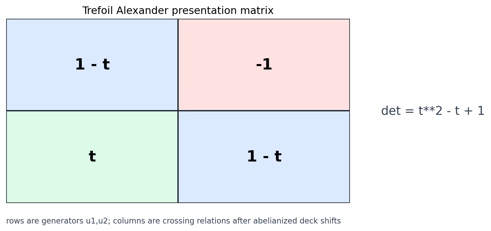
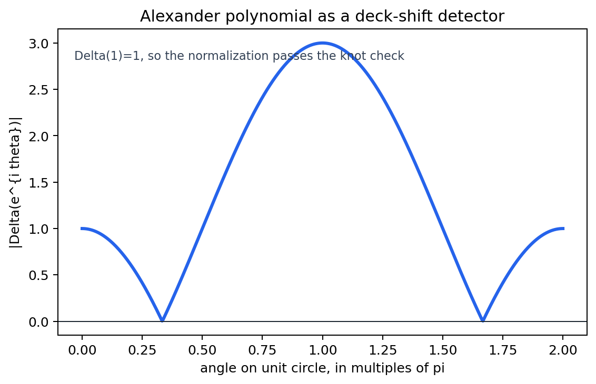
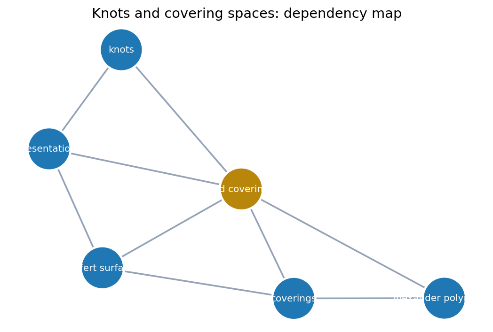

A closed curve in three-space becomes a diagram, a complement group, a covering-space action, and finally a computable polynomial invariant.

A useful knot diagram is a planar projection with finitely many transverse double points, each decorated by which strand passes over.
The drawing is not the knot. It is an annotated shadow whose missing coordinate is stored as crossing data.
Each crossing is read inside a tiny disk. Outside the disk, the diagram is unchanged while local data are edited or recorded.

Two nice diagrams represent ambient isotopic knots exactly when one can pass between them by planar isotopy and finitely many Reidemeister moves.
A number computed from one diagram is not automatically a knot invariant. It must be unchanged by all three move types.
| Candidate data | Move pressure | Teaching use |
|---|---|---|
| crossing count | Type I changes it | diagram complexity, not invariant by itself |
| Wirtinger group | presentation changes | group stays isomorphic |
| Alexander determinant | matrix changes by units | polynomial up to \(\pm t^k\) |

Assign a generator to each overpass in the diagram. At each crossing, read the underpass change as a conjugacy relation in the complement.
A standard reduction of the diagram gives \(\langle a,b\mid aba=bab\rangle\).
Map \(a\) and \(b\) to transpositions in \(S_3\). The relation \(aba=bab\) holds, but the images do not commute.

Smooth oriented crossings, fill the Seifert circles with disks, then restore crossings as twisted bands.
The resulting orientable surface has boundary equal to the original knot diagram, interpreted back in three-space.
For the trefoil, \(\chi=2-3=-1\), so \(-1=2-2g-1\), and hence \(g=1\).
A map \(p:E\to B\) is a covering map if every small enough \(U\subset B\) has preimage split into disjoint open sets, each mapped homeomorphically onto \(U\).
Lift a loop in \(B\) from a chosen sheet. Its endpoint records how the loop moves through the fiber.
The map \(p:\mathbb R\to S^1\) sends a real parameter to an angle. A loop with winding one lifts to a path ending one integer translate away.
Watch the endpoint, not just the projected loop. Endpoint motion is the computational face of monodromy.

A deck transformation is a homeomorphism \(h:E\to E\) with \(p\circ h=p\). It permutes each fiber without changing the base point.
Every Wirtinger meridian maps to the same generator of \(\mathbb Z\). The corresponding regular cover has deck group \(\mathbb Z\).
Choose one deck generator. Its action on homology is written as multiplication by \(t\).

The notebook uses the matrix \(\begin{bmatrix}1-t&-1\\ t&1-t\end{bmatrix}\) as the two-relation Alexander presentation.
The polynomial is read up to multiplication by \(\pm t^k\), reflecting choices in the presentation.
The trefoil determinant has \(\Delta(1)=1\) and symmetry residual \(0\). Editing one diagonal entry collapses the determinant to \(1\) and breaks the same symmetry check.
| row | determinant | \(t=1\) | residual |
|---|---|---|---|
| trefoil crossing data | \(t^2-t+1\) | 1 | 0 |
| edited diagonal entry | 1 | 1 | \(t^2-1\) |
Table source: alexander-matrix-edit-lab.csv


For each object in the pipeline, mark whether it is local diagram data, global complement data, covering-space data, or a polynomial shadow.
Crossings \(=3\), trefoil quotient nonabelian, Seifert genus \(=1\), deck transformations \(=2\), and \(\Delta(t)=t^2-t+1\).